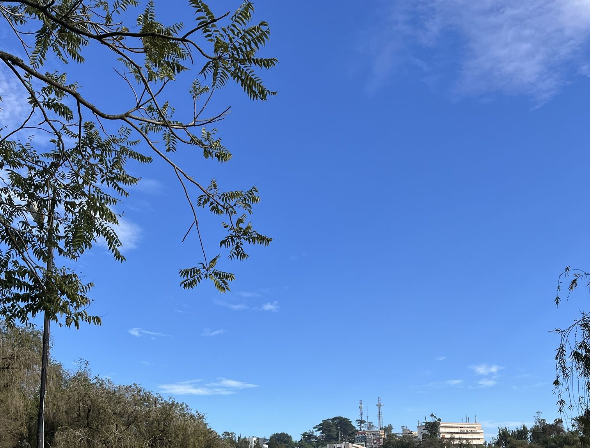

About me
I am Ralph Miguel D. Alejandrino, a first-year BS Computer Science student in section IAA1 at the University of Baguio.
This site collects what I learned in HUMCOM1 this semester. Each week is written as a short lesson, so a classmate starting out can learn from it too.
Baguio, where I study

The view from Burnham Park on a clear morning.
The sea of clouds over Baguio at sunset.